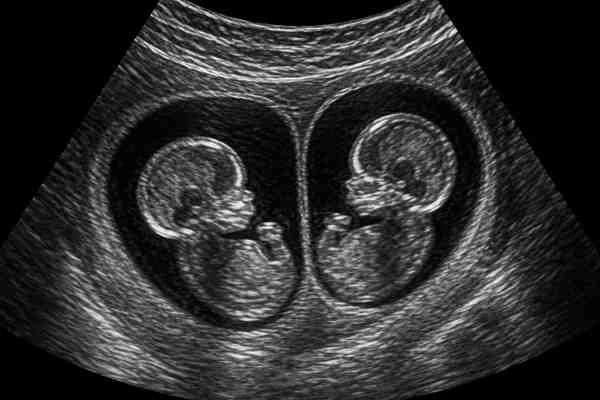
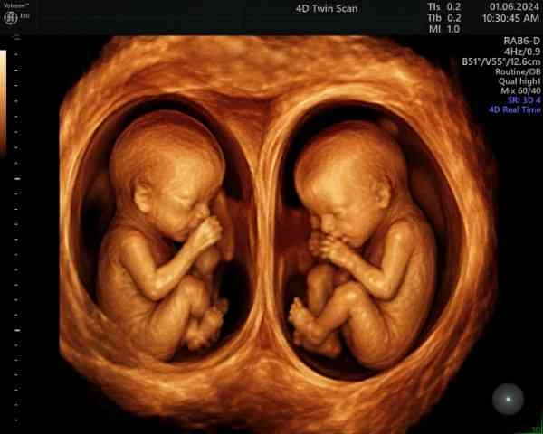

The moment a sonologist tells you there are two heartbeats on screen is one of the most life-changing moments of any pregnancy journey. Twin pregnancies are profoundly different from singleton pregnancies in every clinical dimension — and nowhere is that difference more consequential, or more immediately actionable, than in the ultrasound suite. If you are searching for a pregnancy scan near me in Madurai after a twin diagnosis, the most important thing to understand is that multiple pregnancy scans are not simply twice the workload of a singleton scan. They require different equipment protocols, a more frequent twin pregnancy scan schedule India compliance, specialised knowledge of chorionicity scan interpretation, and the kind of specialist fetal care that only a dedicated fetal scan centre Madurai can provide. At Meera 4D Scans — the most trusted fetal scan centre Madurai for both singleton and twin pregnancies — we see twin mothers throughout every trimester and understand exactly what fetal imaging for twins demands that standard obstetric ultrasound does not. This guide covers the chorionicity scan that defines your entire antenatal plan, the twin ultrasound milestones every parent should know, why the twin pregnancy scan schedule India is more intensive than most parents expect, what specialist fetal care means in practice, and how twin pregnancy doctors Madurai use our reports to manage your care. Book your twin pregnancy scan today or call +91-9042883031.
Why Twin Pregnancies Require a Different Approach to Fetal Imaging
The fundamental reason that fetal imaging for twins differs so significantly from singleton scanning is not simply that there are two babies to measure. It is that twin pregnancies carry a substantially elevated risk profile — and the specific risks depend entirely on the type of twinning involved. A fetal scan centre Madurai that treats a twin pregnancy scan like two simultaneous singleton scans is not providing adequate specialist fetal care. The clinical complexity of multiple pregnancy scans begins with the very first determination: chorionicity and amnionicity.
Every twin pregnancy must be classified by two variables: how many placentas the twins share (chorionicity) and how many amniotic sacs they occupy (amnionicity). These two variables — determined at the chorionicity scan — define everything else about the pregnancy: the frequency of multiple pregnancy scans, the specific twin ultrasound milestones that require monitoring, the risks to watch for, and the level of specialist fetal care required. Patients searching for a pregnancy scan near me in Madurai after a twin diagnosis must prioritise booking their chorionicity scan before 14 weeks — at which point the determination becomes significantly less reliable.
The chorionicity scan is the single most important scan in any twin pregnancy. It determines which twin pregnancy scan schedule India your pregnancy follows, which risks require monitoring, and which level of specialist fetal care is appropriate. At Meera 4D Scans — the leading fetal scan centre Madurai — the chorionicity scan is performed by experienced obstetric sonologists with same-day detailed reporting. Book your pregnancy scan near me at +91-9042883031 before 14 weeks.
The Chorionicity Scan: The Decision That Shapes Your Entire Twin Pregnancy
No single appointment in a twin pregnancy carries more clinical weight than the chorionicity scan. Performed ideally between 11 and 14 weeks at a dedicated fetal scan centre Madurai, the chorionicity scan uses specific ultrasound signs to classify the twin pregnancy into one of three types — each with its own implications for fetal imaging for twins, specialist fetal care, and the twin pregnancy scan schedule India.
The Three Types of Twin Pregnancy and What the Chorionicity Scan Reveals
| Twin Type | Chorionicity Scan Finding | Risk Profile & Specialist Fetal Care Implications |
|---|---|---|
| Dichorionic Diamniotic (DCDA) | Two separate placentas (or one fused placenta with a thick dividing membrane); Lambda / Twin Peak sign at membrane base — the characteristic chorionicity scan sign of DCDA twins | Lowest risk twin type. Standard enhanced multiple pregnancy scans every 4 weeks from 20 weeks; lower requirement for intensive specialist fetal care unless growth discordance develops. The most common finding at a fetal scan centre Madurai |
| Monochorionic Diamniotic (MCDA) | Single shared placenta; thin dividing membrane; T-sign at membrane base — the critical chorionicity scan sign distinguishing MCDA from DCDA twins | Significantly higher risk: twin-to-twin transfusion syndrome (TTTS), selective fetal growth restriction (sFGR), and twin anaemia polycythaemia sequence (TAPS). Fortnightly multiple pregnancy scans from 16 weeks mandatory; intensive specialist fetal care and close coordination with twin pregnancy doctors Madurai required throughout |
| Monochorionic Monoamniotic (MCMA) | Single shared placenta AND shared amniotic sac — the rarest and highest-risk finding at the chorionicity scan; absence of dividing membrane confirmed on fetal imaging for twins | Highest risk twin type: cord entanglement, TTTS, and co-twin demise risks. Requires the most intensive specialist fetal care and the most frequent multiple pregnancy scans across the entire twin pregnancy scan schedule India; immediate referral to a specialist centre in coordination with twin pregnancy doctors Madurai |
Why the Chorionicity Scan Must Be Done Before 14 Weeks
The accuracy of the chorionicity scan declines significantly after 14 weeks. The characteristic ultrasound signs — the Lambda sign and T-sign — that reliably distinguish DCDA from MCDA twins at the fetal scan centre Madurai become less definitive as pregnancy advances. A chorionicity scan performed at 16 or 18 weeks at a standard pregnancy scan near me centre may produce an uncertain result that forces the entire twin pregnancy scan schedule India to be managed as the higher-risk type by default — subjecting a DCDA pregnancy to MCDA monitoring intensity unnecessarily, or worse, under-monitoring a true MCDA pregnancy. This is why every twin mother in Madurai should search for their nearest pregnancy scan near me capable of performing a proper chorionicity scan within the first trimester — and why Meera 4D Scans makes same-day appointments for this scan available to all patients.

Twin Ultrasound Milestones: What Every Scan Is Checking
Once chorionicity is established, the fetal imaging for twins calendar is fixed. The twin ultrasound milestones below are the clinical checkpoints that twin pregnancy doctors Madurai rely on to manage the pregnancy safely — and understanding each milestone helps parents know exactly what each appointment at the fetal scan centre Madurai is designed to detect and confirm.
Milestone 1 — Chorionicity Scan (11–14 Weeks)
Already covered above, the chorionicity scan is the founding twin ultrasound milestone that all subsequent multiple pregnancy scans are built upon. At Meera 4D Scans — the premier fetal scan centre Madurai — this scan is combined with the NT (Nuchal Translucency) assessment for chromosomal risk screening, the crown-rump length measurement for dating, and a heartbeat confirmation for both twins. The combined first trimester fetal imaging for twins appointment at our fetal scan centre Madurai delivers the complete clinical picture in a single visit.
Milestone 2 — Twin Anomaly Scan (18–22 Weeks)
The anomaly scan in a twin pregnancy is one of the most technically demanding of all multiple pregnancy scans. Rather than surveying one fetus across 18+ anatomical structures, the sonologist must complete two full structural surveys — of both twins — often when the babies are in close proximity and may be obstructing each other's anatomy. This is where the quality of the fetal scan centre Madurai matters most: the equipment resolution, the sonologist's experience with fetal imaging for twins, and the time allocated to the appointment all determine whether both surveys are complete. At Meera 4D Scans, twin anomaly scans are scheduled with the extended time required for complete bilateral structural assessment — a standard of specialist fetal care that not every pregnancy scan near me result will offer.
In addition to the structural survey, this is one of the key twin ultrasound milestones at which the cervical length is measured, the placental positions of both twins are documented, and the amniotic fluid volumes surrounding each twin are assessed. Fluid discordance between the two sacs is an early indicator of TTTS in MCDA twins — the most critical risk factor that the twin pregnancy scan schedule India at a competent fetal scan centre Madurai is designed to detect early.
Milestone 3 — Serial Growth Scans (From 20–24 Weeks Onwards)
Serial growth monitoring is the core of the twin pregnancy scan schedule India after the anomaly scan. The frequency depends on chorionicity — and this is one of the clearest practical differences between the scan schedules that twin pregnancy doctors Madurai follow for different twin types.
- DCDA twins — growth scans every 4 weeks from 20 weeks, with Doppler studies added from 28 weeks. The twin pregnancy scan schedule India for DCDA twins involves approximately 4–5 growth-monitoring appointments in the second and third trimesters at a reputable fetal scan centre Madurai
- MCDA twins — growth scans every 2 weeks from 16 weeks, with amniotic fluid discordance measurement, bladder visualisation in both twins (a TTTS screening parameter), and Doppler studies of umbilical, middle cerebral, and ductus venosus arteries as indicated. This intensive multiple pregnancy scans schedule reflects the genuine specialist fetal care requirements of shared-placenta twins and is the standard at Meera 4D Scans
- MCMA twins — weekly or even twice-weekly fetal imaging for twins is standard from 24–26 weeks under the twin pregnancy scan schedule India at specialist centres coordinating with twin pregnancy doctors Madurai. The cord entanglement risk requires regular Doppler assessment that only a dedicated fetal scan centre Madurai with appropriate equipment can deliver reliably
Milestone 4 — Doppler Studies and Fetal Wellbeing Assessment
Doppler flow studies are integral to fetal imaging for twins in a way that they are not for uncomplicated singleton pregnancies. The umbilical artery Doppler measures the resistance of blood flow through the placenta to each twin independently — and in a shared placenta (MCDA/MCMA), unequal placental sharing between the twins creates the conditions for selective fetal growth restriction and TTTS, both of which manifest first as Doppler waveform abnormalities before they become visible as size discordance. At Meera 4D Scans — the fetal scan centre Madurai offering full Doppler capability — every multiple pregnancy scans appointment from the second trimester includes Doppler assessment of both twins as standard, forming one of the most important recurring twin ultrasound milestones in the third trimester monitoring plan recommended by twin pregnancy doctors Madurai.

What Specifically Differs in Fetal Imaging for Twins vs Singletons
For parents who have previously had a singleton pregnancy, understanding exactly what changes about the scanning experience for a twin pregnancy helps set expectations before the first appointment at the fetal scan centre Madurai. The differences are substantial — in appointment length, in what is measured, in the frequency of multiple pregnancy scans, and in the level of specialist fetal care the reports need to support.
| Aspect | Singleton Pregnancy Scan | Fetal Imaging for Twins at Meera 4D Scans |
|---|---|---|
| First trimester scan content | Dating, viability, NT measurement, heartbeat | All singleton content plus chorionicity scan classification, T-sign / Lambda sign documentation, amnionicity assessment — the founding twin ultrasound milestone with no equivalent in singleton care |
| Anomaly scan complexity | 18+ structural views for one fetus; 30–40 minutes | 18+ structural views for each of two fetuses; 50–75 minutes; greater technical difficulty when twins are overlapping; requires extended appointment slots not always offered by a basic pregnancy scan near me centre |
| Biometry measurements per visit | 4 measurements: BPD, HC, AC, FL for one fetus | 8 measurements: BPD, HC, AC, FL for each twin; plus estimated fetal weight for both, growth discordance percentage calculation, and individual amniotic fluid index — all standard at our fetal scan centre Madurai |
| Doppler assessment frequency | Once or twice in the third trimester for most singleton pregnancies | From 16 weeks in MCDA twins; from 28 weeks in DCDA twins; with middle cerebral artery and ductus venosus Doppler added for MCDA monitoring — a core component of specialist fetal care in the twin pregnancy scan schedule India |
| Total scan appointments in pregnancy | 5–7 for an uncomplicated singleton pregnancy | 10–16 for DCDA twins; 16–24 for MCDA twins under the full twin pregnancy scan schedule India. Understanding this commitment is part of choosing the right fetal scan centre Madurai — one you can attend consistently throughout |
| Report length and complexity | One fetal biometry table; one set of findings | Two separate fetal biometry tables; individual weight centiles for Twin 1 and Twin 2; growth discordance calculation; inter-twin fluid ratio; individual Doppler findings — reports that twin pregnancy doctors Madurai rely on for clinical decision-making |
Specific Risks That Multiple Pregnancy Scans Monitor For
The reason the twin pregnancy scan schedule India is so much more intensive than singleton monitoring is not bureaucracy — it is clinical necessity. There are specific, serious conditions that are unique to or dramatically more common in twin pregnancies, and fetal imaging for twins at a qualified fetal scan centre Madurai is the primary detection tool for all of them.
Twin-to-Twin Transfusion Syndrome (TTTS)
TTTS affects approximately 10–15% of MCDA twin pregnancies and is caused by unequal blood flow through placental vascular connections between the two twins. One twin (the donor) becomes anaemic and growth-restricted; the other (the recipient) becomes fluid-overloaded and at risk of cardiac failure. TTTS is identified at fetal imaging for twins appointments by the combination of amniotic fluid discordance between the two sacs — the polyhydramnios-oligohydramnios sequence — visible on multiple pregnancy scans from 16 weeks onwards. Early identification through regular specialist fetal care and appropriate referral to a TTTS intervention centre is the only management pathway — and it begins with a fortnightly twin pregnancy scan schedule India at a capable fetal scan centre Madurai like Meera 4D Scans.
Growth Discordance
Growth discordance — where one twin is significantly smaller than the other — is one of the most common findings across all twin types monitored through multiple pregnancy scans. A discordance of more than 20–25% in estimated fetal weight between Twin 1 and Twin 2 at any twin ultrasound milestone growth appointment signals the need for increased monitoring frequency and closer involvement of twin pregnancy doctors Madurai. At Meera 4D Scans, growth discordance is calculated at every serial growth scan as a standard component of fetal imaging for twins reporting.
Preterm Labour and Cervical Assessment
Twin pregnancies have a significantly higher rate of preterm birth than singleton pregnancies. Cervical length measurement — a transvaginal assessment performed at selected multiple pregnancy scans from 16–24 weeks — is a key risk stratification tool that twin pregnancy doctors Madurai use to identify patients who may benefit from cervical interventions or progesterone supplementation. This is part of the extended specialist fetal care protocol at Meera 4D Scans that patients searching for a standard pregnancy scan near me may not receive elsewhere.
The Full Twin Pregnancy Scan Schedule India at Meera 4D Scans
The following is the complete twin pregnancy scan schedule India implemented at Meera 4D Scans for both DCDA and MCDA twin pregnancies. This schedule is based on ISUOG and RCOG guidelines adapted for the clinical context of a fetal scan centre Madurai providing specialist fetal care in coordination with local twin pregnancy doctors Madurai.
Chorionicity Scan — 11 to 14 Weeks (Mandatory First Step)
The most critical appointment in any twin pregnancy. The chorionicity scan at Meera 4D Scans classifies your twins as DCDA, MCDA, or MCMA; combined with NT measurement, CRL dating, and heartbeat confirmation for both twins. The findings at this twin ultrasound milestone determine every subsequent appointment in your twin pregnancy scan schedule India. All patients searching pregnancy scan near me in Madurai after a twin diagnosis should call +91-9042883031 immediately.
Twin Anomaly Scan — 18 to 22 Weeks
Full structural survey of both twins; cervical length measurement; individual amniotic fluid volumes; placental positions documented. At our fetal scan centre Madurai, extended appointment slots are allocated to ensure complete bilateral anomaly scanning — a non-negotiable standard of specialist fetal care that the twin pregnancy scan schedule India demands. Reports delivered same day for twin pregnancy doctors Madurai.
Serial Growth Scans — From 20 or 24 Weeks (Frequency by Chorionicity)
MCDA twins: every 2 weeks from 16–20 weeks with fluid discordance assessment and Doppler studies at each visit. DCDA twins: every 4 weeks from 20 weeks with Doppler added from 28 weeks. Each serial growth appointment at Meera 4D Scans includes biometry for both twins, individual estimated fetal weights, growth discordance calculation, and individual amniotic fluid index — the core deliverables of fetal imaging for twins that twin pregnancy doctors Madurai require.
Doppler Studies — Integrated Into Serial Scans
Umbilical artery Doppler for both twins at every multiple pregnancy scans visit from 16 weeks (MCDA) or 28 weeks (DCDA). Middle cerebral artery and ductus venosus Doppler added where abnormalities are detected. Doppler findings form the most clinically actionable part of the reports received by twin pregnancy doctors Madurai managing high-risk twin cases.
Third Trimester Wellbeing Scans — 32 to 36 Weeks
Third trimester scans assess fetal presentation of both twins (critical for delivery planning), liquor volumes, growth trajectories, placental maturity, and Doppler wellbeing. These late-pregnancy twin ultrasound milestones at Meera 4D Scans are frequently the appointments where twin pregnancy doctors Madurai make delivery-timing decisions — making the completeness and same-day availability of our reports from the fetal scan centre Madurai clinically time-sensitive.
Questions to Ask at Your Twin Pregnancy Scan
First-time twin parents often arrive at the fetal scan centre Madurai uncertain about what information they need. The following questions — drawn from the clinical priorities of every fetal imaging for twins appointment — ensure you leave each multiple pregnancy scans visit with the information that matters most to your care.
Your Twin Pregnancy Scan Question Checklist
- "What is the chorionicity — are they DCDA or MCDA?" — this is the single most important question at your first chorionicity scan appointment. The answer determines your entire twin pregnancy scan schedule India and the level of specialist fetal care you need
- "What is the estimated weight of each twin and what is the growth discordance percentage?" — at every serial growth appointment at our fetal scan centre Madurai, this figure tells your twin pregnancy doctors Madurai whether the multiple pregnancy scans frequency needs to increase
- "Are the amniotic fluid volumes equal for both twins?" — in MCDA twins, fluid discordance is the earliest sign of TTTS. Confirm this at every fetal imaging for twins appointment and ask for the individual deepest vertical pocket measurements
- "Are the Doppler waveforms normal for both twins?" — abnormal Doppler findings in one twin at any twin ultrasound milestone scan may require urgent referral. Confirm normal end-diastolic flow for both umbilical arteries at every visit
- "What are the presentations of both twins?" — from 28 weeks onwards, fetal presentation becomes clinically relevant for delivery planning discussions between you and your twin pregnancy doctors Madurai
- "When do I need to come back?" — the twin pregnancy scan schedule India at Meera 4D Scans is personalised at each appointment. Always confirm your next pregnancy scan near me date before leaving, as the interval may change based on findings
Red Flags: When to Book an Urgent Fetal Scan for Twins
Between scheduled multiple pregnancy scans appointments, twin mothers must know which symptoms require an unscheduled urgent visit to the fetal scan centre Madurai — and should never delay searching for a pregnancy scan near me when these arise.
- Sudden, marked increase in abdominal size — rapid expansion of the uterus can indicate acute polyhydramnios in one sac, a warning sign of TTTS in MCDA twins requiring urgent fetal imaging for twins and immediate specialist fetal care referral
- Reduced or absent fetal movement in one or both twins — any perceived reduction in movement between scheduled twin ultrasound milestones appointments warrants urgent contact with your fetal scan centre Madurai and twin pregnancy doctors Madurai on the same day
- Vaginal bleeding or increased pelvic pressure — any bleeding in a twin pregnancy requires same-day multiple pregnancy scans assessment; increased pelvic pressure before 34 weeks should prompt cervical length evaluation at the fetal scan centre Madurai
- More than one week past a scheduled MCDA scan date — in MCDA twins, the fortnightly twin pregnancy scan schedule India must be kept precisely. Deferring an MCDA monitoring appointment by more than a week risks a significant change in TTTS staging going undetected. Contact our fetal scan centre Madurai immediately
Why Meera 4D Scans Is Madurai's Leading Fetal Scan Centre for Twin Pregnancies
Families across Madurai searching for a pregnancy scan near me capable of providing genuine specialist fetal care for a twin pregnancy consistently choose Meera 4D Scans — the fetal scan centre Madurai that covers every twin ultrasound milestone, every chorionicity scan, every multiple pregnancy scans appointment, and every Doppler study in the twin pregnancy scan schedule India with the equipment quality, clinical expertise, and reporting standards that twin pregnancy doctors Madurai and their patients rely on.
- Dedicated chorionicity scan service — experienced obstetric sonologists perform the chorionicity scan to ISUOG standards with T-sign and Lambda sign documentation, combined first trimester assessment, and same-day detailed reporting for twin pregnancy doctors Madurai
- Extended appointment slots for twin anomaly scans — unlike a standard pregnancy scan near me centre, Meera 4D Scans allocates dedicated extended time for the bilateral structural survey required in fetal imaging for twins at 18–22 weeks
- Full Doppler capability for all twin types — umbilical artery, middle cerebral artery, and ductus venosus Doppler studies available at every multiple pregnancy scans visit as standard specialist fetal care
- Personalised twin pregnancy scan schedule India — at your first appointment, our team maps out your complete twin pregnancy scan schedule India based on your chorionicity classification, gestational age, and any risk factors identified at the chorionicity scan
- Same-day detailed reports for twin pregnancy doctors Madurai — two-fetus biometry tables, individual weight centiles, growth discordance calculations, individual fluid measurements, and Doppler findings all documented and delivered to WhatsApp or email before you leave — the complete clinical document twin pregnancy doctors Madurai need
- Transparent all-inclusive pricing — the fetal imaging for twins appointment cost quoted at booking is the total payable. No hidden charges for extended time, Doppler studies, or additional measurements required for specialist fetal care
- Trusted by 10,000+ patients in Madurai — the fetal scan centre Madurai that twin pregnancy doctors Madurai and their patients choose for every twin ultrasound milestone from first trimester to delivery planning
Twin pregnancy demands more from your scan centre — more appointments, more clinical detail, more reporting precision, and more genuine specialist fetal care than any singleton pregnancy. Do not trust a standard pregnancy scan near me result when the stakes are this high. Choose the fetal scan centre Madurai that provides every entry on the twin pregnancy scan schedule India with the quality that twin mothers deserve. Book your twin pregnancy scan at Meera 4D Scans today — same-day appointments available, same-day reports, and the specialist fetal care your twins need. Call +91-9042883031.
Frequently Asked Questions
When is a chorionicity scan done in a twin pregnancy?
The chorionicity scan should be performed between 11 and 14 weeks — ideally as early as possible within this window. At Meera 4D Scans — the leading fetal scan centre Madurai — the chorionicity scan is combined with the NT scan and dating assessment in a single comprehensive multiple pregnancy scans appointment. After 14 weeks, accuracy declines significantly and the twin pregnancy scan schedule India may need to default to MCDA monitoring intensity.
How often do twin pregnancies need scans in India?
The twin pregnancy scan schedule India at Meera 4D Scans recommends: chorionicity scan at 11–14 weeks, anomaly scan at 18–22 weeks, then every 2 weeks for MCDA twins from 16 weeks and every 4 weeks for DCDA twins from 20 weeks. Multiple pregnancy scans are far more frequent than singleton care — up to 24 appointments for MCDA twins — because of the risks that fetal imaging for twins must detect early. All scans are available at our fetal scan centre Madurai.
What is the difference between MCDA and DCDA twins on ultrasound?
The chorionicity scan distinguishes MCDA twins (one shared placenta; T-sign at the membrane base) from DCDA twins (separate placentas; Lambda sign at the membrane base). This is the most critical finding in fetal imaging for twins — MCDA twins carry significantly higher risk and require a more intensive twin pregnancy scan schedule India and specialist fetal care plan. Determined at the first appointment at any quality fetal scan centre Madurai.
What are the key twin ultrasound milestones I should know about?
Key twin ultrasound milestones include: chorionicity scan at 11–14 weeks (the most critical); anomaly scan at 18–22 weeks covering both twins; serial growth scans from 20–24 weeks at the frequency determined by chorionicity; Doppler studies integrated from 16–28 weeks; and third trimester wellbeing scans at 32–36 weeks. Meera 4D Scans — the fetal scan centre Madurai — provides complete specialist fetal care across all these twin ultrasound milestones.
Is specialist fetal care required for all twin pregnancies in Madurai?
All twin pregnancies require enhanced monitoring beyond singleton care, but MCDA and MCMA twins specifically require specialist fetal care at a dedicated fetal scan centre Madurai with full Doppler capability and experienced sonologists familiar with fetal imaging for twins. DCDA twins require enhanced multiple pregnancy scans frequency but lower intervention risk. Meera 4D Scans provides specialist fetal care for all twin types in Madurai in coordination with twin pregnancy doctors Madurai.
What makes Meera 4D Scans the best fetal scan centre for twins in Madurai?
Meera 4D Scans is the leading fetal scan centre Madurai for twin pregnancies because of its dedicated chorionicity scan service, extended appointment slots for bilateral anomaly scanning, full Doppler capability for all fetal imaging for twins risk monitoring, personalised twin pregnancy scan schedule India planning from the first appointment, same-day reports for twin pregnancy doctors Madurai, and transparent all-inclusive pricing. Trusted by 10,000+ patients — the pregnancy scan near me result that twin families in Madurai choose first.
Useful Resources
Trusted clinical references for twin pregnancy scanning, chorionicity assessment, fetal imaging for twins, and specialist fetal care guidelines relevant to maternity patients in Madurai and across India.
-
ISUOG Practice Guidelines — Multiple Pregnancy Ultrasound International Society of Ultrasound in Obstetrics and Gynaecology clinical guidelines on chorionicity scan, fetal imaging for twins, twin ultrasound milestones, and specialist fetal care standards for multiple pregnancy ultrasound practice.
-
RCOG Green-Top Guideline — Management of Monochorionic Twin Pregnancy Royal College of Obstetricians and Gynaecologists definitive guideline on MCDA twin pregnancy management, chorionicity scan, TTTS monitoring, twin pregnancy scan schedule, and specialist fetal care protocols informing practice at every fetal scan centre.
-
WHO Maternal Health — Antenatal Care for Multiple Pregnancies World Health Organization guidance on antenatal care, recommended scan frequency for multiple pregnancies, and global standards for specialist fetal care in twin and higher-order pregnancies.
-
PC-PNDT Act — Government of India Official Portal Official portal for PC-PNDT Act compliance — registration requirements, patient rights, and legal obligations for all pregnancy scan near me providers including fetal scan centre Madurai facilities performing multiple pregnancy scans.
-
NCBI — Twin Pregnancy Monitoring and Fetal Imaging Evidence Peer-reviewed clinical evidence on fetal imaging for twins, chorionicity scan accuracy, twin ultrasound milestones, and outcomes data from multiple pregnancy scan schedule protocols across India and internationally.